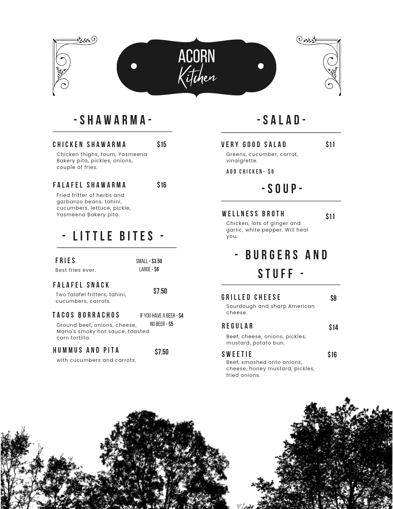
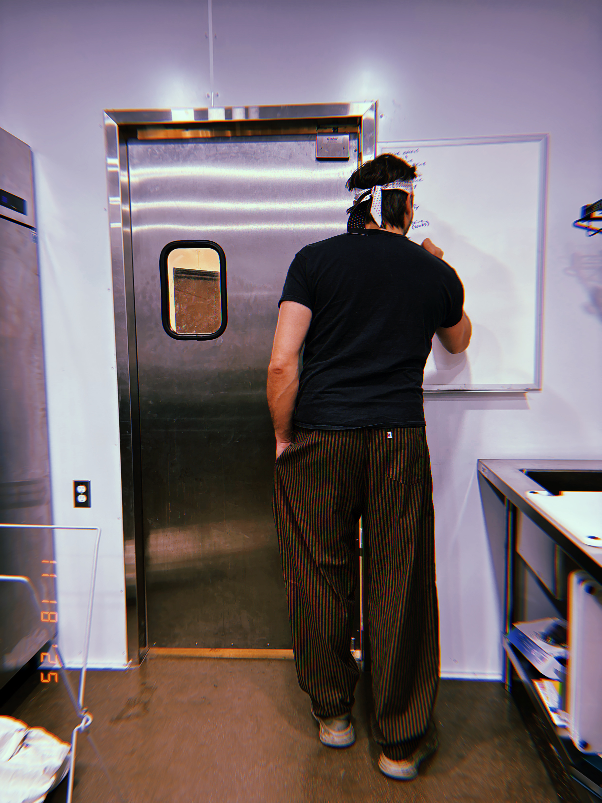
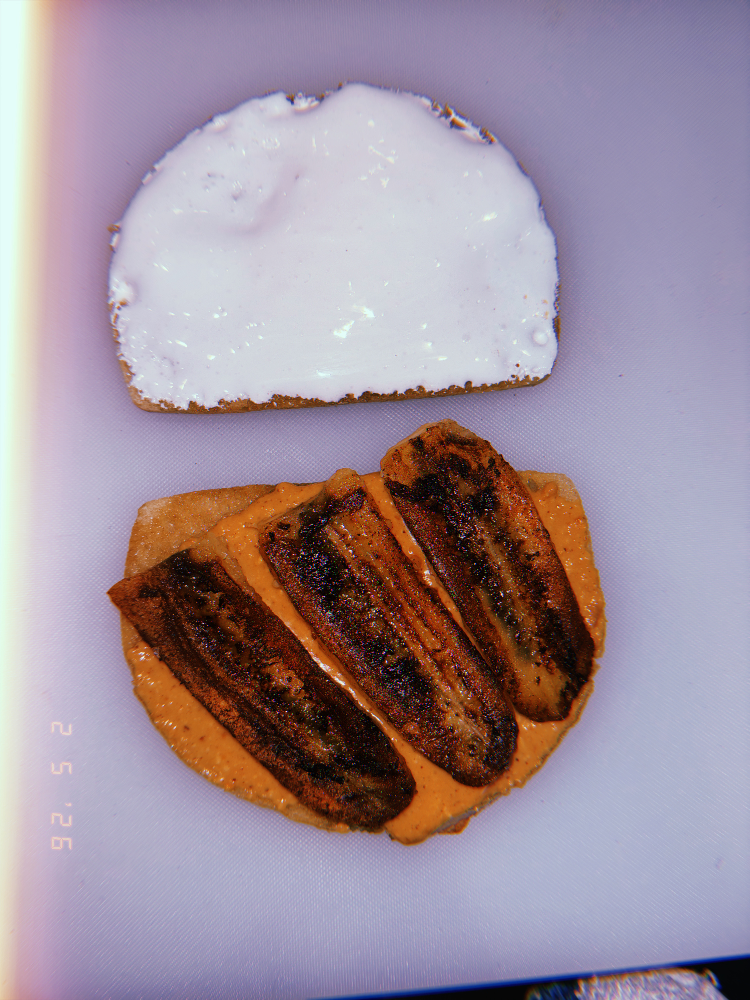

The Menu
Acorn changes often. Use this page as a visual taste of the kitchen, then check in person or online for the current lineup.
Downloadable Menu



Tiny kitchen warning
Photos are examples, not promises. The board changes when it changes.